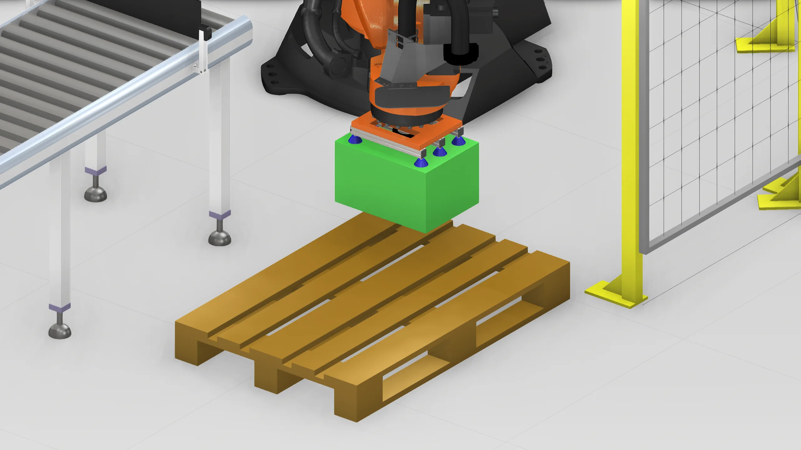
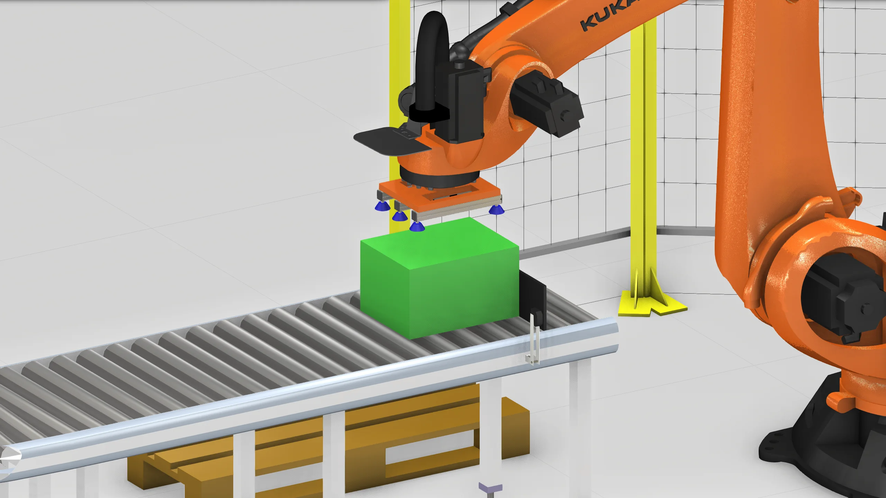
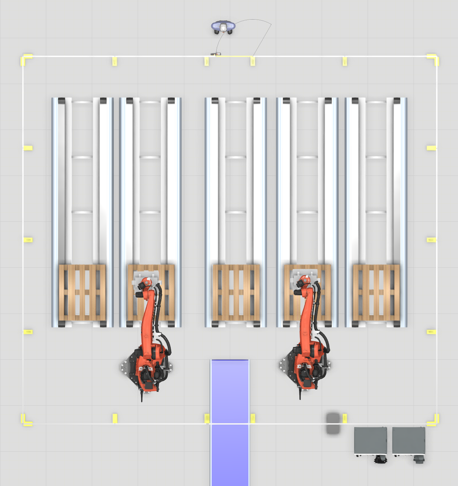
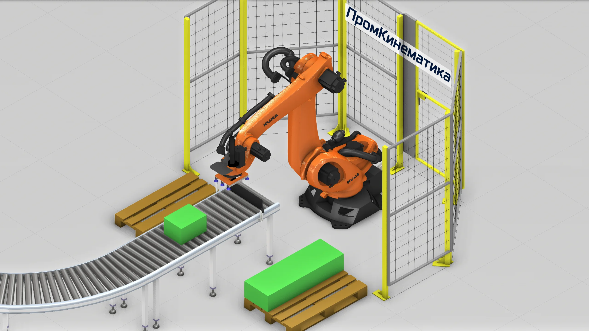
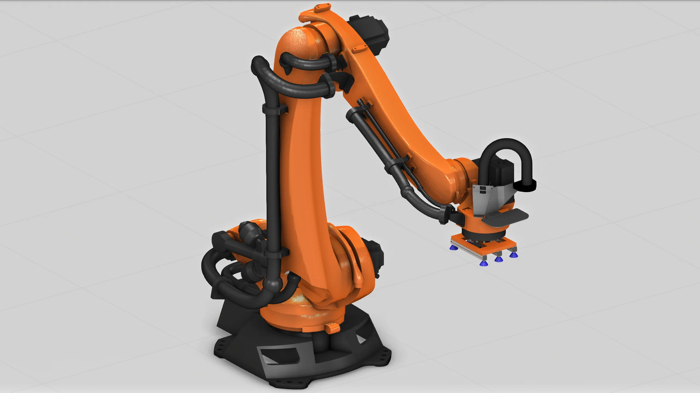
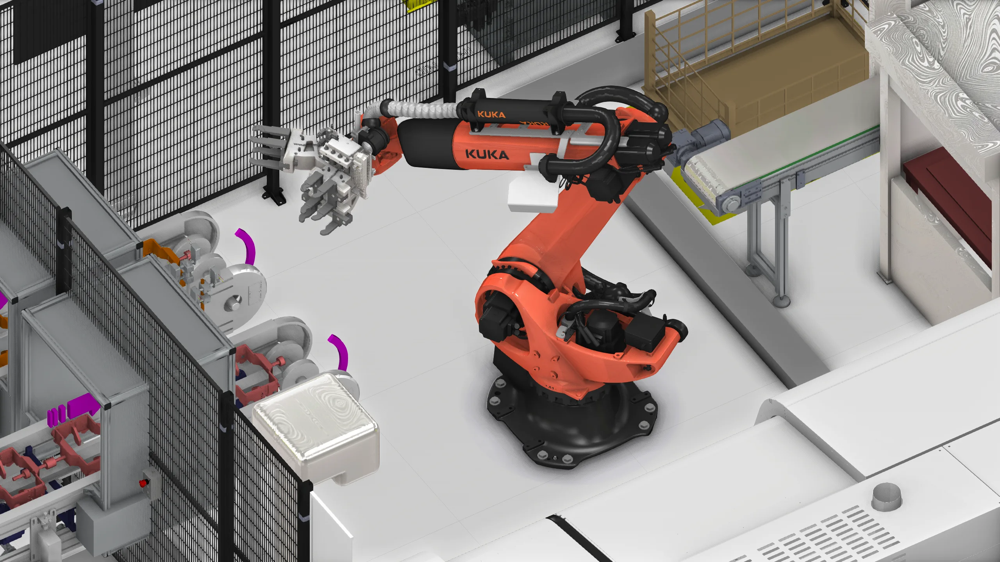
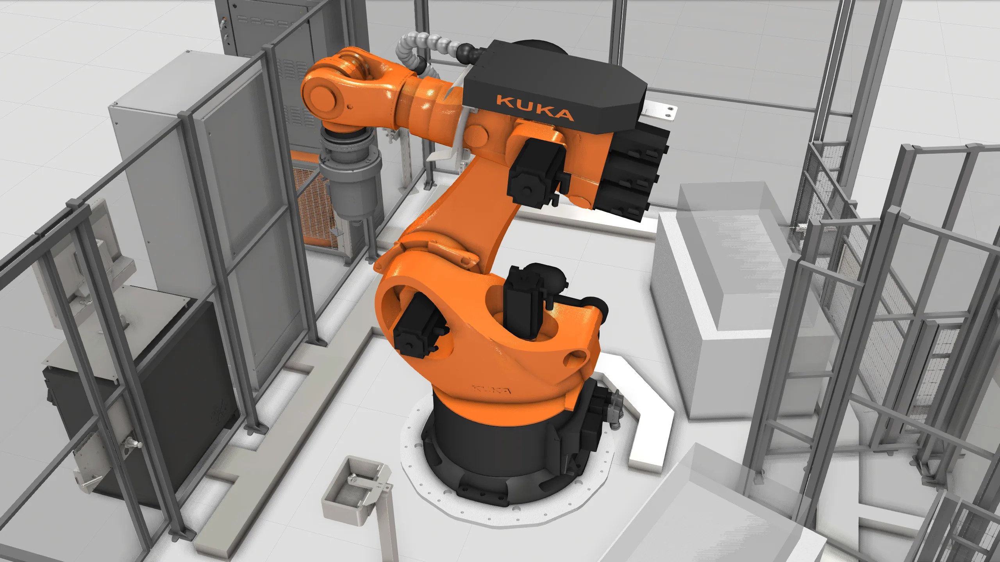

01
Паллетирование
Укладка коробок и продукции по заданной схеме.
Официальный партнёр KUKA
Проектируем и внедряем роботизированные решения на базе KUKA. Быстро и бесплатно подготовим предварительную модель для вашего производства.

01 Официальный партнёр KUKA
02 Сертифицированные специалисты KUKA
03 От модели до пусконаладки

Решение до закупки оборудования
Предварительная 3D-модель показывает будущую ячейку и помогает уточнить решение до начала проектирования.

Бесплатное предварительное моделирование
Получаем исходные данные и собираем предварительную модель ячейки. Вы заранее видите компоновку, рабочие зоны и логику решения.
Инженерная компетенция KUKA
Подбор, моделирование, интеграцию и пусконаладку выполняют квалифицированные специалисты по оборудованию KUKA.
Под задачуПодбираем конфигурацию под процесс, изделие и площадку.
Полный циклВедём решение от цифровой модели до рабочего режима.
Единая системаИнтегрируем ячейку в линию и IT-контур предприятия.

Полный цикл работ
Типовые направления
Проектируем роботизированные решения для широкого спектра производственных задач.

Укладка коробок и продукции по заданной схеме.

Загрузка, выгрузка и работа с оснасткой.

Перемещение и повторяемые процессы с 6-осевыми роботами.
Путь проекта
Начать можно даже без готового технического задания.
Инженерная преемственность
Технологическая база, знакомая российской промышленности
Следующий шаг
Начнём с процесса, изделия и желаемого результата. Готовое техническое задание не обязательно.